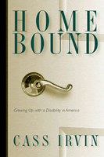

Finding the way home without a map
Finding the way home without a map


 Finding the way home without a map
Finding the way home without a map

|  |
Home BoundGrowing Up with a Disability in AmericaCass Irvinpaper EAN: 978-1-59213-220-1 (ISBN: 1-59213-220-0) |
"Home Bound is a very important book. It's greatest strength is the political message that it delivers about disability. Breaking out of the familiar genres of disability books such as history, autobiography, inspirational, or catastrophe narratives, Irvin's book sets out a rhetoric of protest and consciousness-raising that mobilizes elements from more conventional disability books to create a fresh discourse of disability from inside the movement. She clearly and convincingly lays out the arguments for seeing disability as a sociopolitical issue, for recognizing its connections to the civil rights and women's movements, for disability pride, and for building community and a politicized consciousness. No other book that I know of attempts what this ambitious volume does."
—Rosemarie Garland-Thomson, author of Extraordinary Bodies: Figuring Physical Disability in American Literature and Culture
"When I was growing up, I learned that if you were a girl you went to school and college, then you married, became a wife and had a family. . . . When I became disabled, my journey, I was pretty sure, was not going to take me in those directions. What was I supposed to be? What kind of life was I supposed to have?"
Once polio had made her a quadriplegic, Cass Irvin didn't know where she fit in or what would become of her. Neither did her parents, teachers, counselors, or rehabilitation therapists. And so began her search for a place to call home.
In this memoir, Cass Irvin tells of the remarkable journey that transformed her from a young girl too timid to ask for help to a community activist and writer who speaks forcefully about the needs of people with disabilities. As a young girl she was taken to Warm Springs, Georgia, where she learned about living as a disabled person and found a hero in Franklin Delano Roosevelt, the famously if silently disabled president. Bright and inquisitive, Cass soon began to question the prevailing assumptions of a society that had no place for her and to question her own meekness.
In time, her keen sense of injustice gave her the courage to fight for a college education. That personal victory emboldened her to find the means to live independently, but it also persuaded her that political work is the key to enabling all people with disabilities to live fulfilling lives. This book, then, is testimony to the importance of community building and organizing as well as the story of one woman's struggle for independence.
Excerpt available at www.temple.edu/tempress
"Home Bound delivers a slice of history that is relatively well known to the public-at-large—Roosevelt, Warm Springs, JFK—as well as a slice that is relatively unknown—the disability rights movement. There is a remarkable ring of 'truth' and authenticity. There is also a freshness and honesty. [Irvin] writes with a certain rawness and enthusiasm. I loved the energy of this book and the people I visited and revisited as I read. Home Bound speaks across 'disability lines.' It is powerful, well-written, and hard to put down."
—Dr. Fred Hafferty, Department of Behavioral Sciences, University of Minnesota
"The author's courage to overcome obstacles makes this book an inspiration for readers living with any kind of disability, and non-disabled adults will gain increased understanding from her remarkable story."
—ForeWord
"Home Bound is like no other disability book I've ever read...this book is candid...interesting with the little details that make up the cornerstones of disability culturalization."
—Albuquerque Tribune
"...more than a life story, [it] is also a meditation on the experience of disability in America....It is not the remarkable life of the author that sets this book apart, it is the unembellished way that she writes about it."
—Disabilities Studies Quarterly
"A hard life lived well. This is what makes it an important book."
—RALPH: The Review of Arts, Literature, Philosophy, and the Humanities
"...an engaging read."
—Quest magazine
"Cass Irvin deserves much credit for thoughtfully and provocatively rendering her story."
—"The International Network on Feminist Approaches to Bioethics" newsletter; Home Bound
"Irvin's book is destined to become a classic in disability studies, disability history and disability policy. Written with eloquence and humor, it provides convincing examples of the key concepts of the disability rights movement.... While this book reads like an autobiography or a novel, it is a book to be revisited many times."
—Journal of Sociology and Social Welfare
"The book is candid, sustaining the reader's interest with the little details that make up the cornerstones of disability acculturation.... Irvin wrote a book that looks straight at us through the eyes of living disabled, and rarely blinks."
—Ragged Edge
"Through well-written and memorable anecdotes about everything from interviewing personal assistants to negotiating public transportation, Irvin gives readers a rare window into the daily struggles of people with disabilities."
—On Campus With Women
"...a fascinating description of growing up with a disability."
—Review of Disability Studies
"...a testimony to the importance of community building and organizing as well as the story of one woman's struggle for independence."
—Paraplegia News
"Irvin [is] a gifted writer...She illumines family life, relationships, combat stories of advocacy and narratives of the lives of other folks affected by the disability advocacy movement. In Cass Irvin�s resolute pursuit of a meaningful and independent life - despite the countervailing forces that abound in American culture - she gives us humor, realism and abiding hope. Read this book. Please."
—Hart County News-Herald
Acknowledgments
1. From the Kitty Room
2. True Home: Warm Springs
3. Attendant Vibrations
4. The Radicalization of Cass
5. True Hero
 | Cass Irvin lives in Louisville, Kentucky. She is Executive Director of Access to the Arts, Inc. and is a frequent contributor to The Ragged Edge. |
Biography/Memoir/Autobiography
Disability Studies
Women's Studies
© 2015 Temple University. All Rights Reserved. This page: http://www.temple.edu/tempress/titles/1425_reg.html.